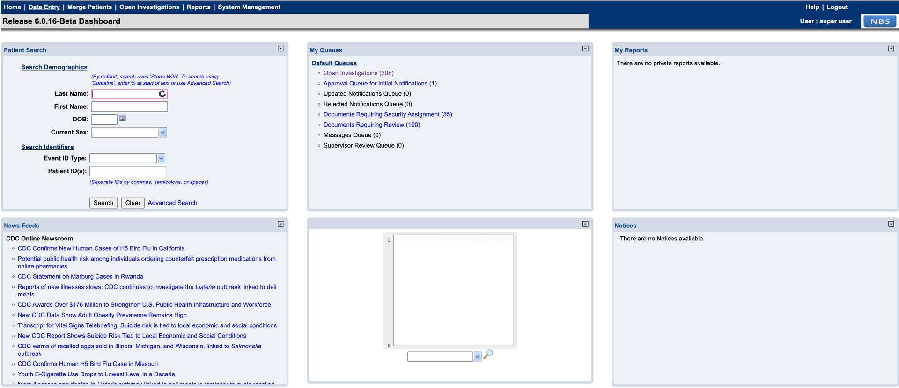
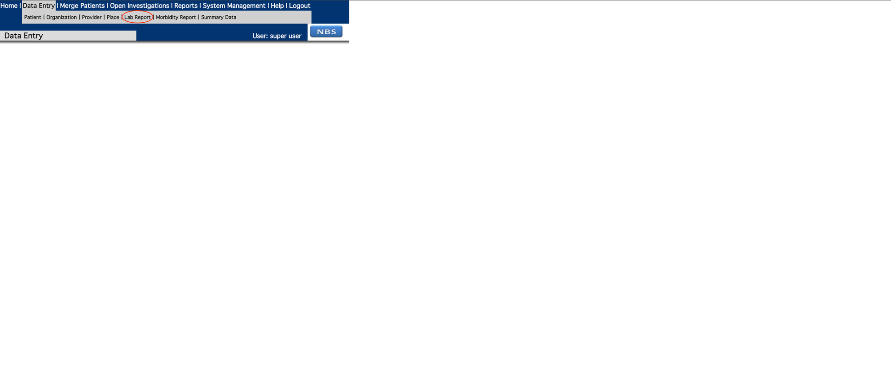
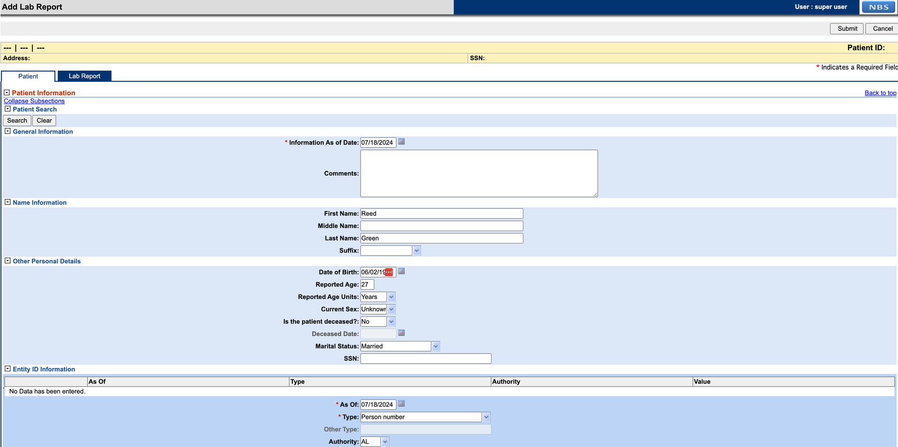
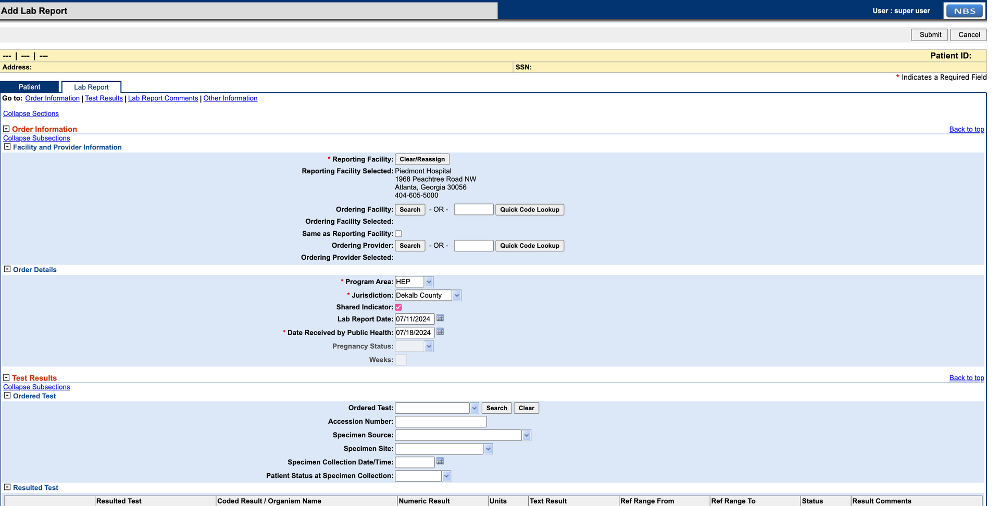
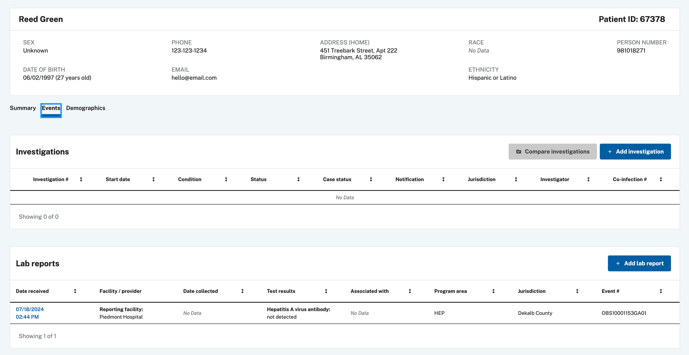
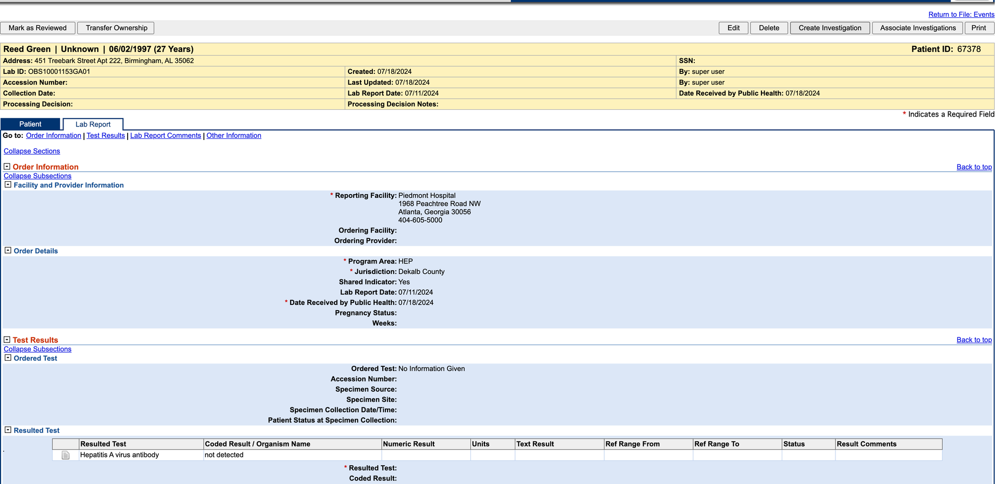
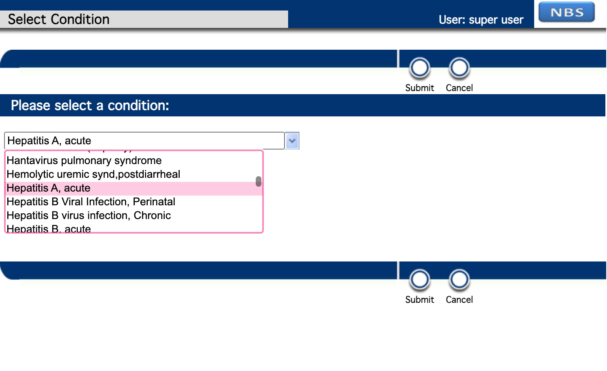
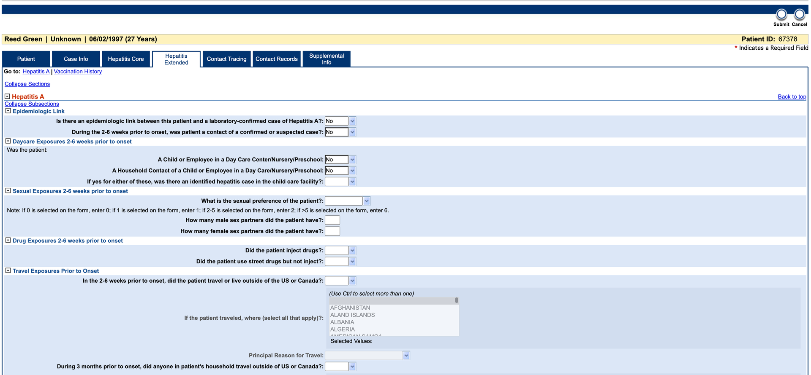
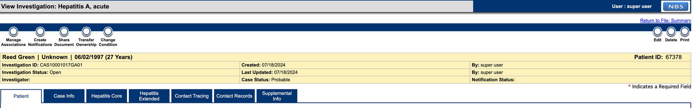

Validate the real-time reporting (RTR) pipeline
Use this page to validate that RTR streaming updates move from ingestion through processing into reporting datamart tables.
On this page
Validate via the NBS UI
This example covers creating a Hepatitis Investigation from the NBS UI and verifying the results in the datamart tables. The data used is synthetic and randomly generated.
-
Access the NBS UI with the username and password provided for the demo and click Data Entry in the top banner.

-
Under Data Entry, select Lab Report to start a report.

-
Add patient information to the lab report. Entity ID is required to complete the Patient tab. If SSN is selected, the authority should be
Social Security Administration.
-
Select the Lab Report tab and fill in the required details. The Program Area for this example is HEP. The Resulted Test section is required before submitting. Click Submit when done. Any errors will appear in red — correct them and resubmit.

-
Navigate to the patient record via Patient Search or find the lab report in the Documents Requiring Review queue. From the patient record, open the Events tab to view the lab report.

-
Click Create Investigation in the upper right corner.

-
Select a Hepatitis condition.

-
Complete the Investigation form and click Submit.

-
After 1–2 minutes, verify the data is available in the
PUBLICHEALTHCASEFACT_Modernand Hepatitis datamarts. Use the Investigation ID from the form in the query below.
DECLARE @local_id VARCHAR(20) = 'CAS10001017GA01' SELECT LASTUPDATE, PHCF.* FROM NBS_ODSE.DBO.PUBLICHEALTHCASEFACT_Modern PHCF WHERE LOCAL_ID IN (@local_id); SELECT REFRESH_DATETIME, hd.* FROM RDB_MODERN.DBO.HEPATITIS_DATAMART hd WHERE INV_LOCAL_ID IN (@local_id); SELECT cl.* FROM RDB_MODERN.DBO.CASE_LAB_DATAMART cl WHERE INVESTIGATION_LOCAL_ID IN (@local_id); SELECT isd.* FROM RDB_MODERN.DBO.INV_SUMM_DATAMART isd WHERE INVESTIGATION_LOCAL_ID IN (@local_id); -
If data is missing from the datamart tables, run the query below to check for SQL script errors. If errors persist, contact the support team.
SELECT * FROM RDB_MODERN.DBO.JOB_FLOW_LOG WHERE Status_Type = 'ERROR' ORDER BY batch_id desc;
Validate via ELR ingestion
Instead of creating entries through the NBS UI, you can test the pipeline using ELR (Electronic Lab Report) ingestion through the Data Ingestion service. See the Data Ingestion smoke test section in the release documentation for detailed steps.
If Workflow Decision Support (WDS) is configured and a matching algorithm is detected during a HEP ELR ingestion, an investigation is automatically created and added to the investigation queue. If WDS is not configured, the ELR is still ingested successfully and appears in the Documents Requiring Review queue. From there, open the HEP lab report and continue from step 5 of the UI validation process above.
The data used for this example is synthetic and randomly generated. Any HEP-related ELR (Hepatitis A, B, C, etc.) can be used.
Sample Hepatitis A ELR:
MSH|^~\&|HL7 Generator^^|Family Health Center^42D7444477^CLIA|ALDOH^OID^ISO|AL^OID^ISO|202408261214||ORU^R01^ORU_R01|20240826121475|P|2.5.1
PID|1|239082358^^^Family Health Center&42D7444477&CLIA|239082358^^^Social Security Administration&SSA&CLIA^SS||Sanchez^Andrew^Frank^ESQ^Mrs^JD|Lin|196903240000|F|kavita|2076-8^Native Hawaiian or Other Pacific Islander^CDCREC|35381 Randy Passage Suite 203^unit 7779^Natashahaven^LA^30342^USA||^^^JaredLee75@yahoo.com^^732^9566115^4740|^^^AndrewSanchez75@hotmail.com^^732^1499917^4740|ENG|T^^^^^|||042-80-2420|||2186-5^Not Hispanic or Latino|Wagnerburgh|Y|3|||USA|202408051214|Y
PV1||R
ORC|RE||94884048343^Russell, Chandler and Potts^34D4434343^CLIA||N||||||||||||||||Lowery-Gonzalez|175 Flores Highway Suite 629^unit 2037^Devinburgh^DE^47827^USA|^^^^^^979^7323277^2821|96626 Tamara Ports Apt. 716^unit 31129^Port Heatherstad^NC^24461^USA
OBR|1|75^Test Org 2 AC^1234^|804164994m^Family Health Center^42D7444477^CLIA|40724-7^Hepatitis A virus IgG Ab [Presence] in Serum by Immunoassay^LN^75^TestData^L|S||202408261214|202408311214||||BLD|Back anything crime everything such research.|202408261214||5860083^Mullen^Sarah^II^Mr^BS|2964833605^^^JenniferSalas75@yahoo.com|||||202408311214|||F|||9097261^Mills^Justin^ESQ^Mrs^BA|||69413^Dietary surveillance and counseling^36866|47356&Young&Barbara&&IV&Mrs&DRN^202408261214^202408311214
OBX|1|NM|40724-7^Hepatitis A virus IgG Ab [Presence] in Serum by Immunoassay^LN|1|100^1^:^1|mL|10-100|H|||C||||||||202408261214
SPM|1|8283570&Test Org 2 AC&1234&^3200553&Family Health Center&42D7444477&CLIA||NAIL^Nail^HL70487^UMB^Umbilical blood^SCT^2.5.1^Nail|||UMB^UMB^TG|426364234^carry^SNM||||75^ML||Participant personal you manager.|||202408261214^202408311214|202408261214|||